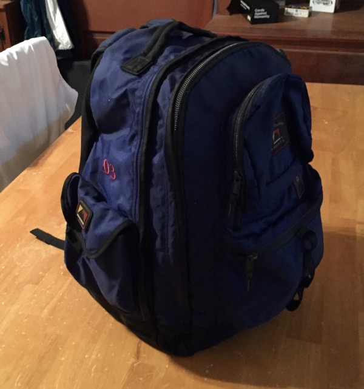
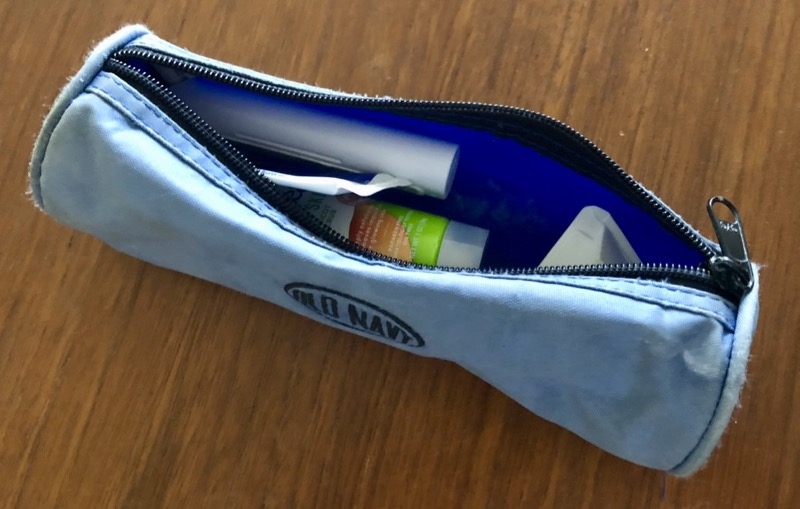
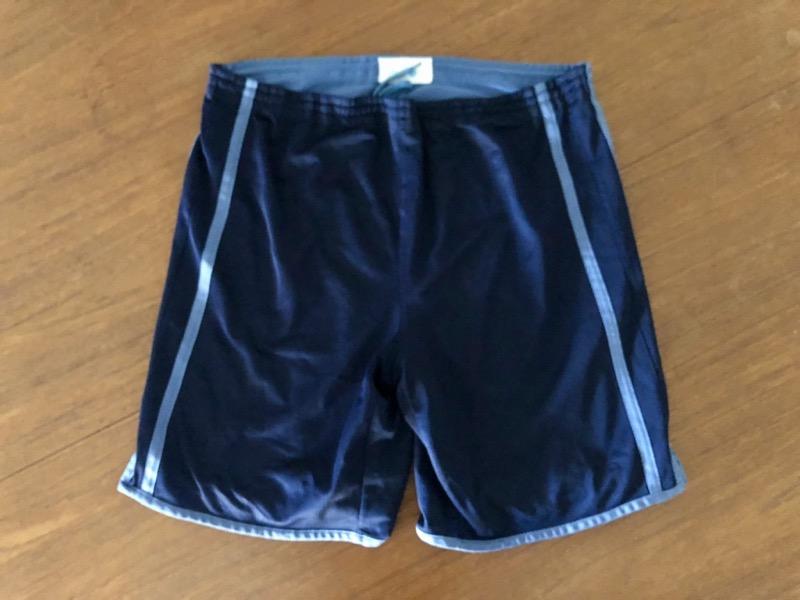
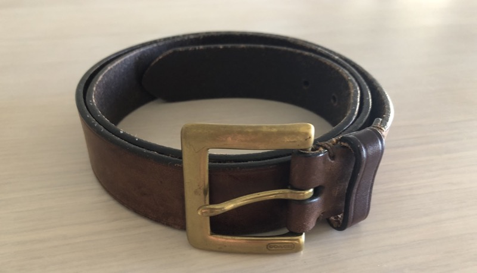
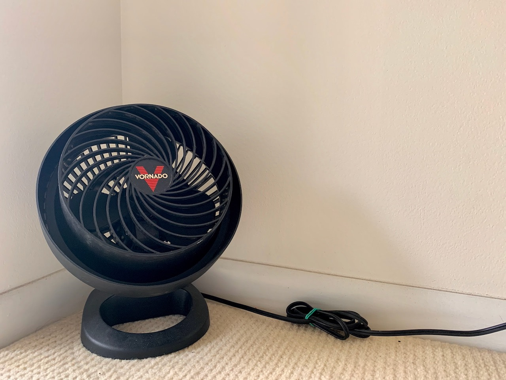

Odes to things that have lasted an unexpectedly long time despite constant use. When so many of my other things are disposed of or replaced increasingly frequently, it’s nice to remember these.
Black Mountain Sports Backpack
Summer 2003 – November 2014: Perhaps the consumer item that most defines me is a backpack. I prefer them to any other kind of bag, and I am always looking for a better one — whether for a specific purpose like long-distance skateboarding, weekend travel, taking a laptop to a coworking space, or one that generally satisfies any purpose. Before I started college in the fall of 2003, I was gifted this wholly generic backpack. The label said Black Mountain Sports, which has no official record anywhere on the Internet. I think it was a Costco house brand.
I don’t have to point out how ugly it was. But it sure was functional. I learned to pack certain things in certain pockets: the top exterior pocket was for small essentials like gum or sunglasses, or even an iPod. The bottom exterior pocket was for larger essentials like a charger or toiletry case (see below!). One side pocket was a traditional mesh water bottle pocket with a cinch cord, which I used as intended. The other side pocket was like a cargo shorts pocket with a Velcro flap. I never used this. The thinner main compartment had built-in fabric separators for school supplies and papers; this is where I put those things or a plastic bag with dirty clothes at the end of the trip. The main main compartment was for clean clothes and a laptop in the laptop sleeve.
I packed this bad boy the same way every time for the better part of a decade. I didn’t take it on many trips, likely because I was either a full-time student or full-time employed for most of the time I owned it. But its zippers never failed, the straps never broke, and it always did the job.
An honorable mention goes to its replacement and my current all-purpose backpack, the Incase Campus Compact. This is rated at only 20L of capacity, and its two side water bottle pockets are useless. They expand into the main compartment, rather than with a stretchy fabric outward. But its simple shape and cleaner design were too appealing. And so, this has been packed (stuffed) the same way for a whole bunch of short trips. The top pocket (made of concerningly-thin fabric) is for the same small essentials as before. The front pocket is for the same larger essentials. The hidden front pocket, which has no room to expand, is for small papers, like boarding passes. And then the main compartment for clothes and a laptop in the laptop sleeve.
I still enjoy this backpack, though like I said above, I’m always looking for the next one. Maybe that will have a similar appearance, but actually functioning side pockets, and better ventilation down the back. I can’t be seen with the giant patch of back sweat anymore!
Old Navy Pencil Case
Let’s say 1998 – July 2018: My brothers and I were each gifted one of these in our respective colors sometime in the late 1990s. They were never used as pencil cases, rather as teeny tiny dopp kits. I can remember packing my toothbrush and a travel toothpaste in mine and taking it to a sleepover all the way back in 8th grade. And I continued to do so twenty years later (and even then with some additional things like floss, chapstick, and earplugs).
The thing is, while the pencil case has been more than adequate in size to carry overnight toiletries, and appreciably small enough to toss in a backpack pocket, it was never intended for this. For one, it’s not waterproof, and a wet toothbrush soaks through the fabric every time. For another, like many things from Old Navy, I doubt it was designed to last this long. Look at the radiant blue of the interior compared to the faded blue of the outside. Plus, it looks downright juvenile to plop this down in the bathroom of a shared Airbnb.
So this summer, I upgraded to a (still undersized) dopp kit made out of recycled tires. It is nothing if not waterproof, though significantly larger and less pliable. I’ll have to pack it in the main compartment of my backpack now. And it still smells like rubber, which I’m a little worried will transfer to the clothes in the same compartment.
Pro Spirit Athletic Shorts
Fall 2004 – Summer 2020: I bought these reversible drawstring gym shorts at Target in the first semester of my sophomore year. My roommate bought the same pair. He usually wore his with the light blue side out, so I wore mine navy out, and continue that way today. It’s entirely possible that this was the pair that started my obsession with wearing gym shorts all day everyday. I was told later that school year that I was known across campus as the polo shirt and gym shorts guy at parties.
And these don’t even have pockets! I remember many a skateboard trip in college in these shorts and an aforementioned polo shirt; my college ID, debit card, and iPod shuffle in the chest pocket like a hapless dweeb. These shorts are so lightweight and breathable that it doesn’t feel like I’m wearing anything.
My current go-to shorts are also from Target, and (purely coincidentally) in the same two shades of blue. These C9 brand shorts aren’t reversible – I’m talking about two pairs here – but they have pockets and the same barely-there weight. It’s an outright shame that Target does not make nor sell any shorts like these anymore.
Coach Leather Belt
Spring 2003 – Present: Another gift before I started college. I have never found a black leather belt with the same qualities that I love in this one: the matte finish of the leather, its low weight, the simplicity of the buckle, and the way it develops a patina over years of use. Perhaps most impressive of all is that I’ve been able to use the same notch the whole time: the middle one out of the five. The only pair of dress shoes I own now is brown, purposefully to match this belt. I don’t think it will ever wear out.
Vornado Small Air Circulator
August 2006 – Present: Purchased for my college senior year dorm room, to augment the building’s central air conditioning. It ran silently in the corner and kept me cool in the Southern California heat. I packed it up and took it with me after graduation, and it sporadically came out for a respite from summer heat.
Now I live in South Florida, where you pretty much require air conditioning from April to October. This fan is now a full-time resident in the corner of my bedroom. It augments the A/C overnight, keeping me from setting the temperature even lower and driving up my electric bill. And in those blessed months when I can get by with open windows and a cross breeze, it makes sure that stays the case. It hasn’t degraded at all with time and use; it’s still as quiet and powerful as ever.